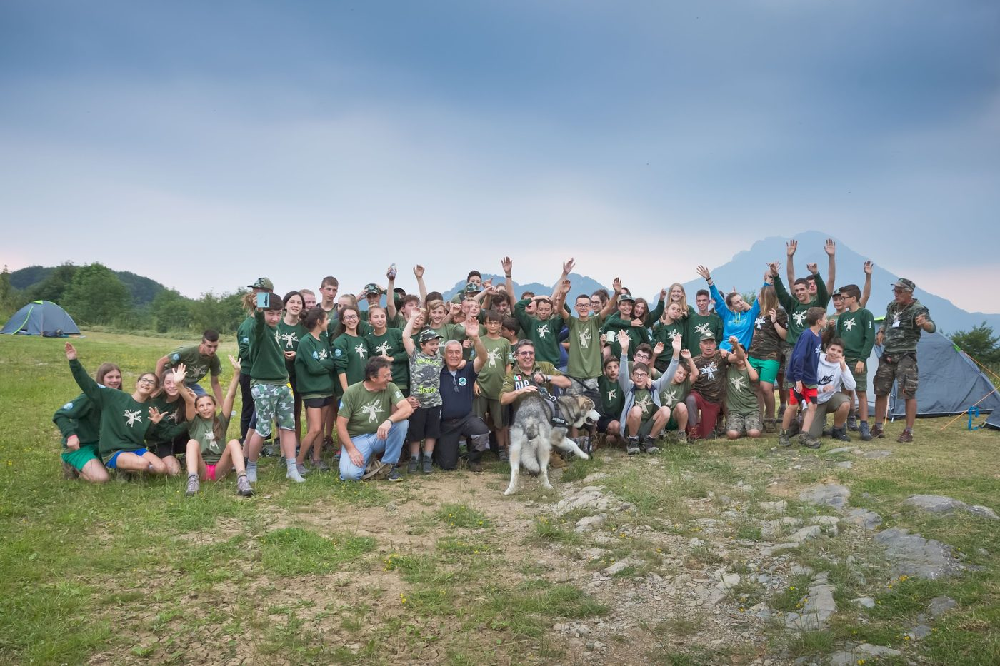
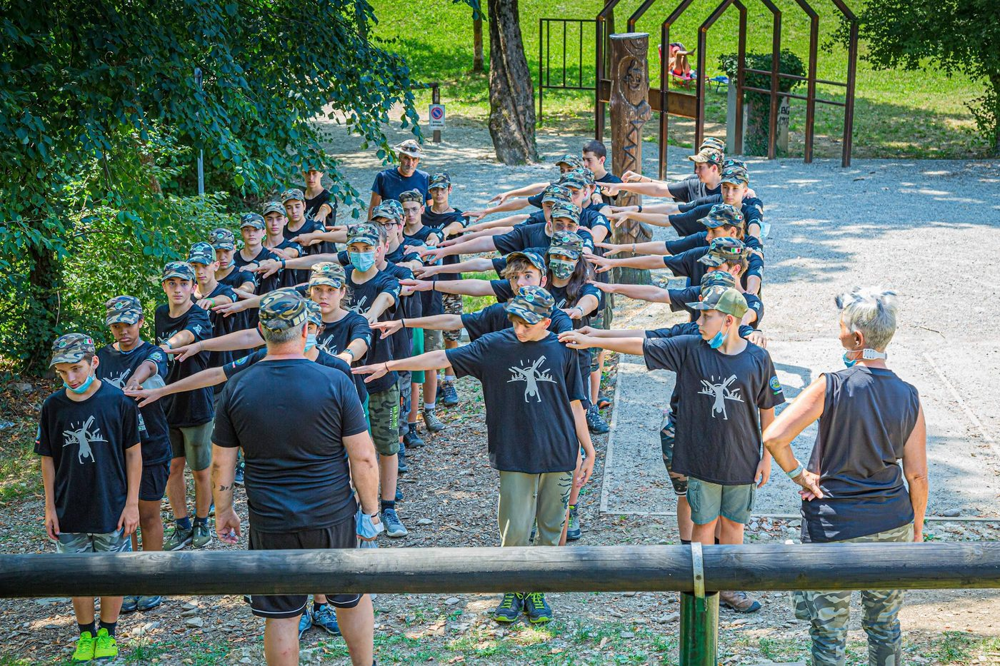
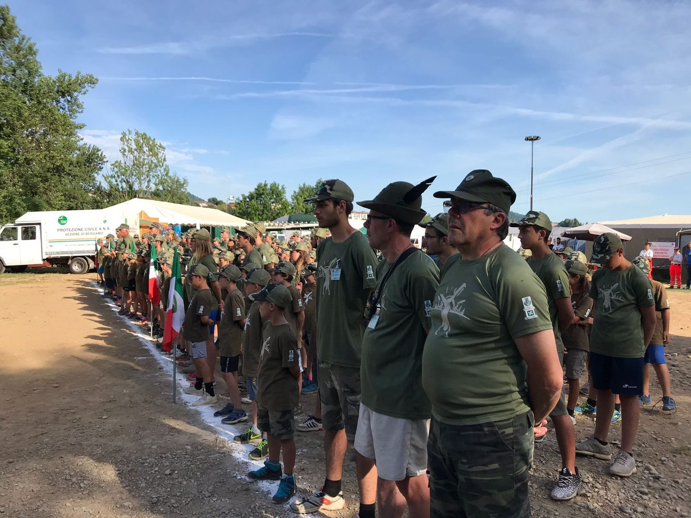
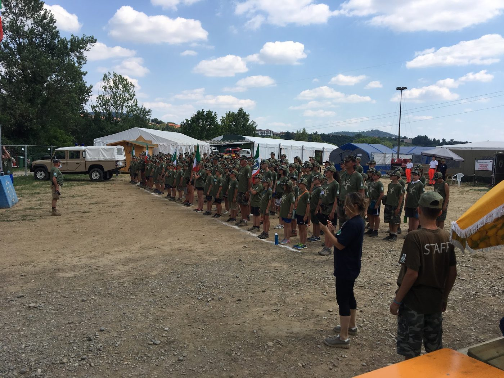
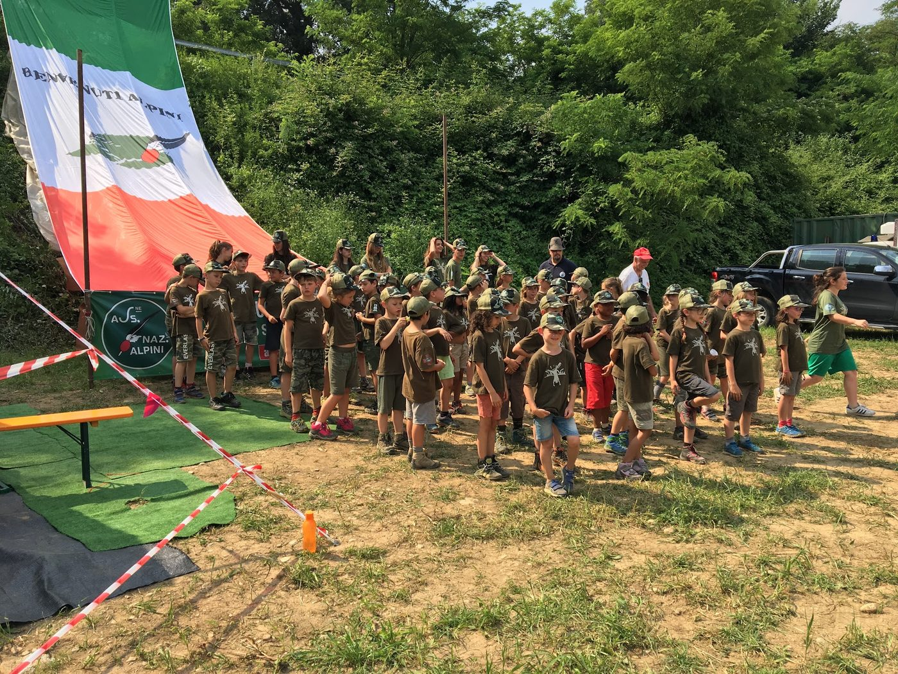
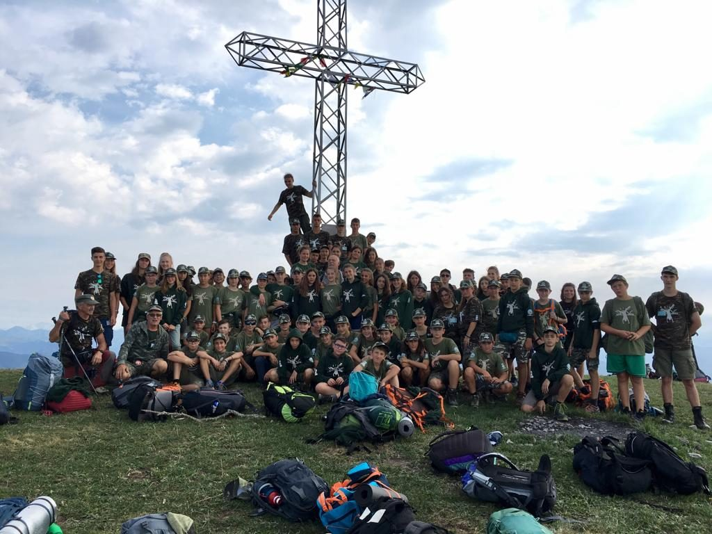
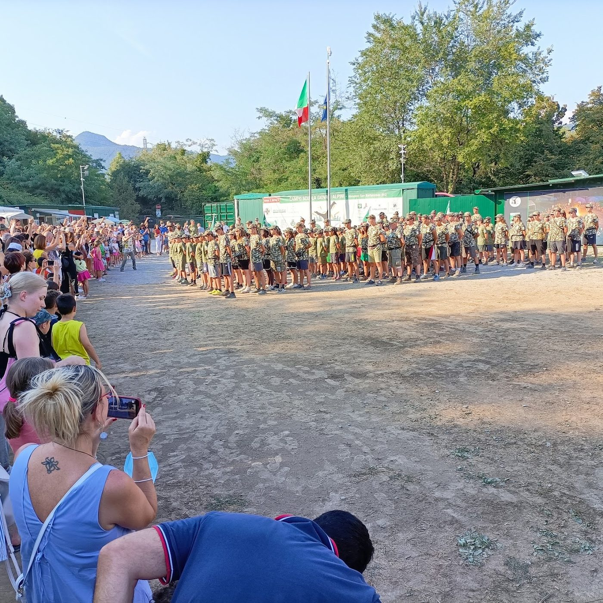
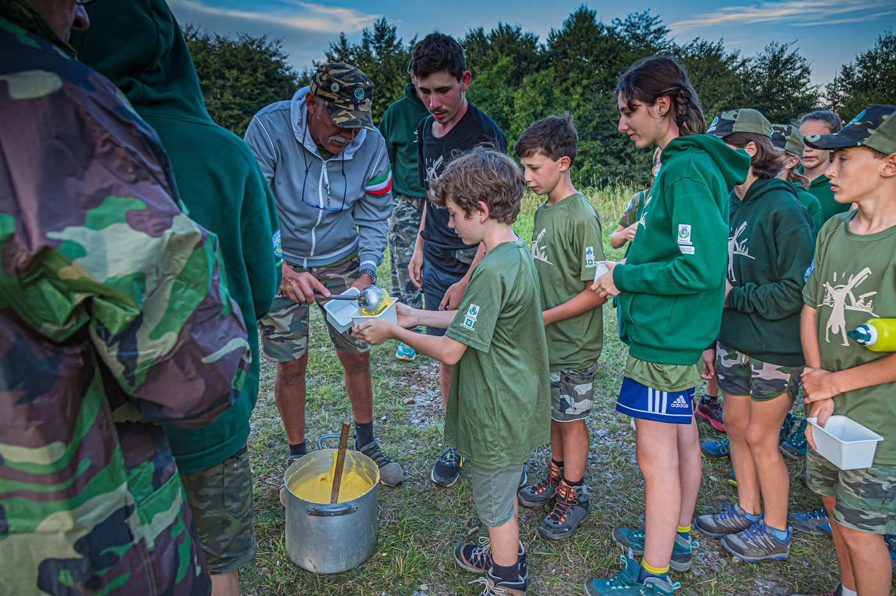

Un archivio visivo delle edizioni passate del campo scuola. Le foto reali verranno caricate in foto/sito/.








Foto reali del campo, tratte dalla scheda Google Business del Gruppo Alpini Almenno San Bartolomeo — non sono attribuite a un'edizione specifica.
Video delle edizioni passate: link YouTube da confermare — un video generico sul campo è stato individuato su YouTube ma non ancora verificato in dettaglio (vedi ricerca-web.md).
Qui sotto vedi gli album e i post fotografici reali pubblicati sulla pagina Facebook del Gruppo Alpini Almenno San Bartolomeo, aggiornati in automatico. Clicca su una foto per aprirla su Facebook.
Il riquadro sopra è il widget ufficiale "Pagina Facebook": mostra i post e le foto reali della pagina, sempre aggiornati. Se non si carica (blocco cookie/ad-blocker/privacy del browser), usa il pulsante qui sopra per andare direttamente su Facebook.